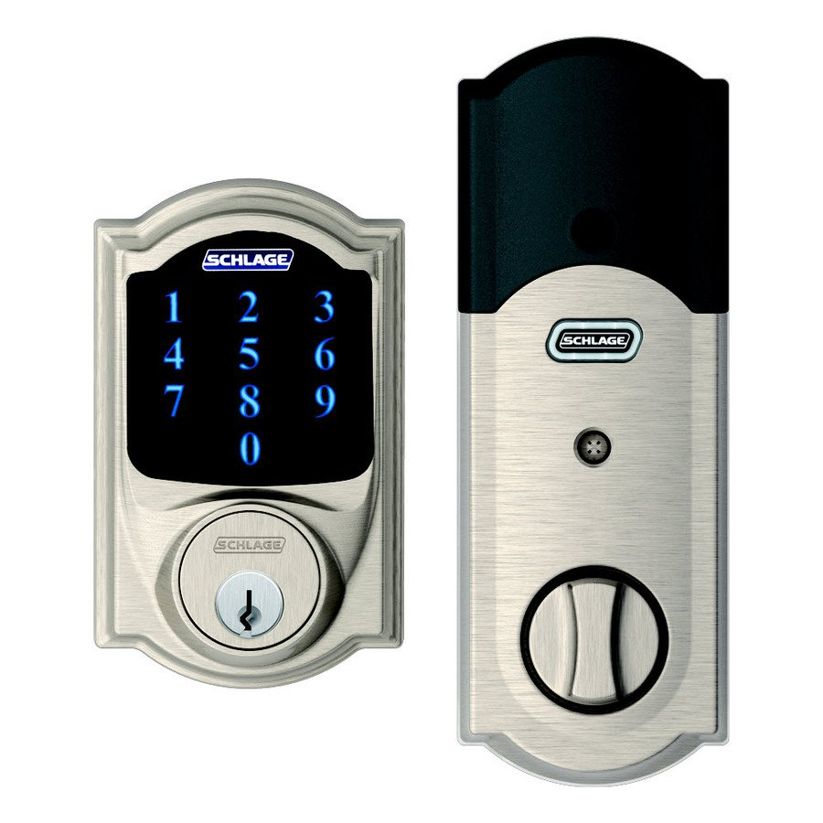
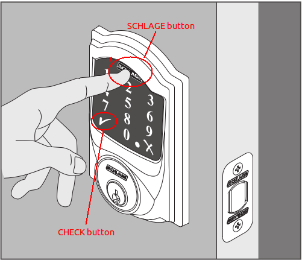

Schlage Connect Camelot Touchscreen¶

How to add to VENUS app¶

- Adding/Removing
- Press “Add button” (button ‘+’) in app
- Open the door (if it’s not already openned)
- Press to Schlage button
- Enter Default user code (this code is list in attached manual) then press “Check” button
- Re-enter default user code then press “Check” button
- Wait for VENUS scan & detect this device and inform in app
Configuration description¶
Beeper
Value Description ON Default. Enable sound when pressing key. OFF Disable sound when pressing key. Vacation mode
Value Description ON The door can not be un-locked by User-code. This mode is apply when away from home. OFF Default. Lock and leave
Value Description ON Default. Door can be locked from outside by pressing Schlage button and rotate the thumbturn. OFF Door is locked when input user-code and rotate the thumbturn. With this setting, unauthorized person from locking the door from the outside Auto lock
Value Description ON Door is auto-lock after amount of time OFF Disable auto-lock feature Length of pass-code
Value Description 4-8 Pass-code length